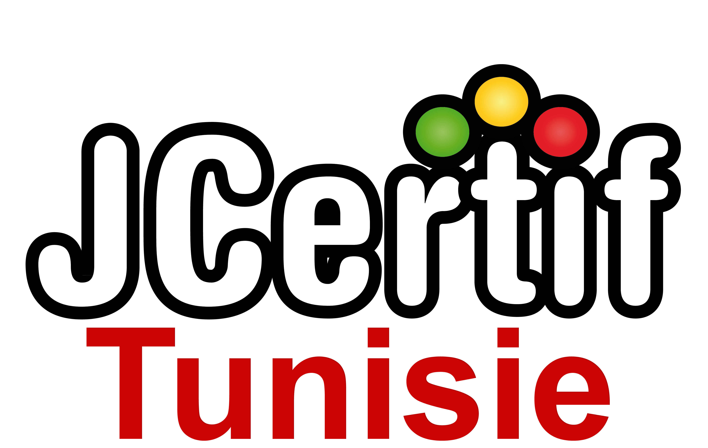

Le Web Déconnecté
Rossi Oddet
Nantes, France
CTO JCertif
Consultant IT, Groupe SQLI
@rossioddet
blog.roddet.com
Quel usage de l'offline ?
Clients Natifs
Plugins navigateurs
Applications Web
Offline First ?
Faire fonctionner son App d'abord en mode "hors ligne"
Puis ajouter les fonctionnalités "en ligne"
Arrêter de traiter le "hors ligne" comme une erreur
Merci